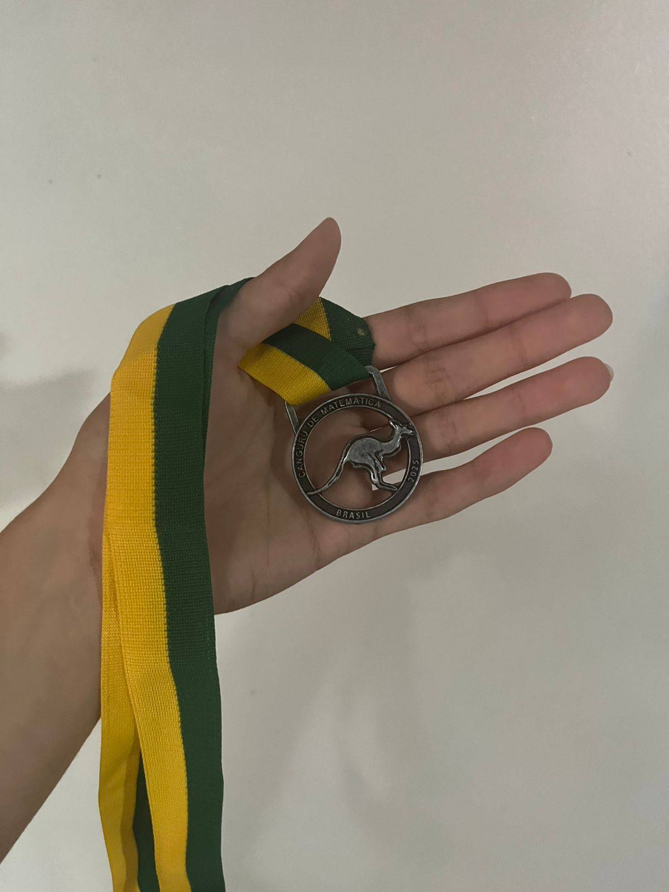
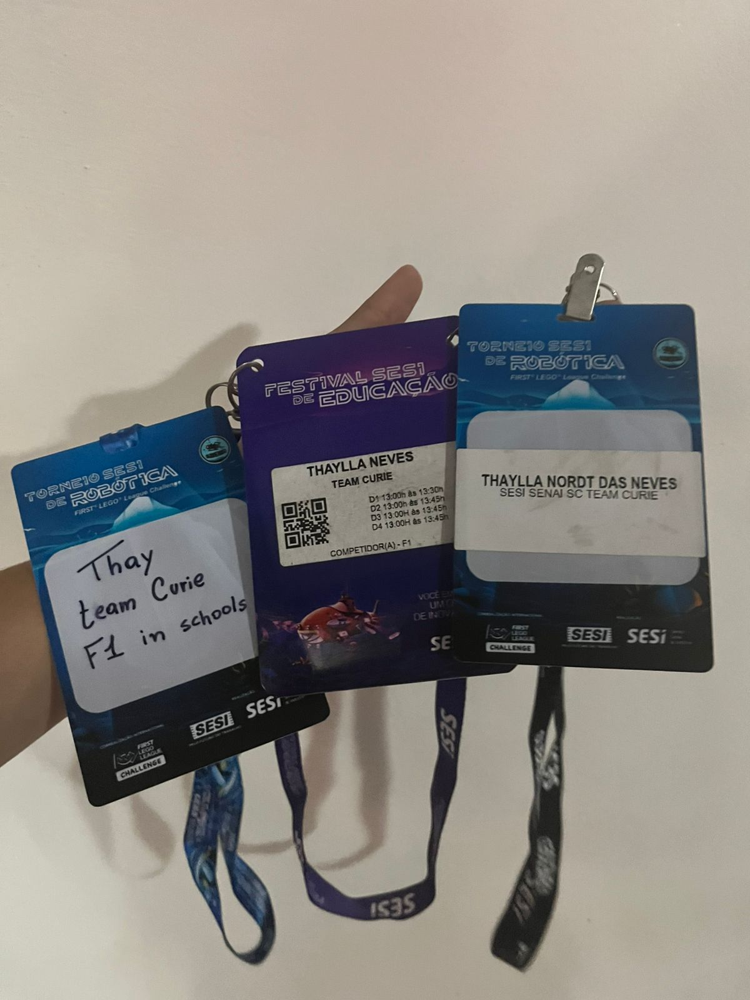
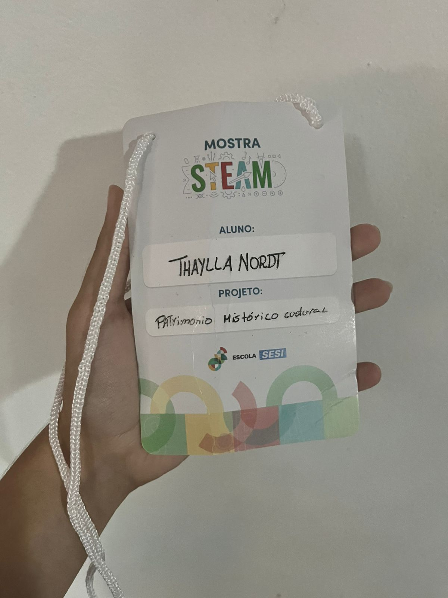

Algumas conquistas (Medalhas) que adqueri até aqui.

O Concurso Canguru é a maior competição internacional de Matemática do mundo, aberta a estudantes do 3º ano do Fundamental I ao 3º ano do Ensino Médio. Criado na França, acontece em mais de 100 países e reúne milhões de alunos, com desafios que estimulam o raciocínio lógico e despertam o gosto pela Matemática.

O Festival SESI de Educação é um dos maiores eventos de robótica e tecnologia da América Latina, celebrando a aprendizagem inovadora e estimulando habilidades STEAM (ciência, tecnologia, engenharia, artes e matemática) em estudantes de 9 a 19 anos.

Minhas identificações utilizadas nos eventos do SESI, representando momentos importantes da minha trajetória estudantil. Entre elas, estão os crachás do Torneio SESI de Robótica e do Festival SESI de Educação, onde participei como integrante da Team Curie. Esses materiais simbolizam experiências marcantes de aprendizado, inovação, trabalho em equipe e desenvolvimento em competições educacionais.

Identificação utilizada na Mostra STEAM da Escola SESI, evento voltado à apresentação de projetos que integram ciência, tecnologia, engenharia, artes e matemática. No crachá, consta minha participação como aluna no projeto “Patrimônio Histórico Cultural”, representando uma experiência importante de aprendizado, criatividade, pesquisa e desenvolvimento acadêmico.